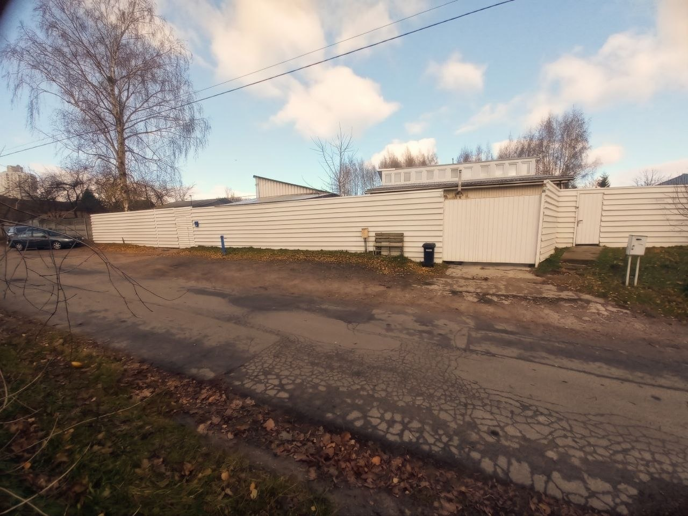
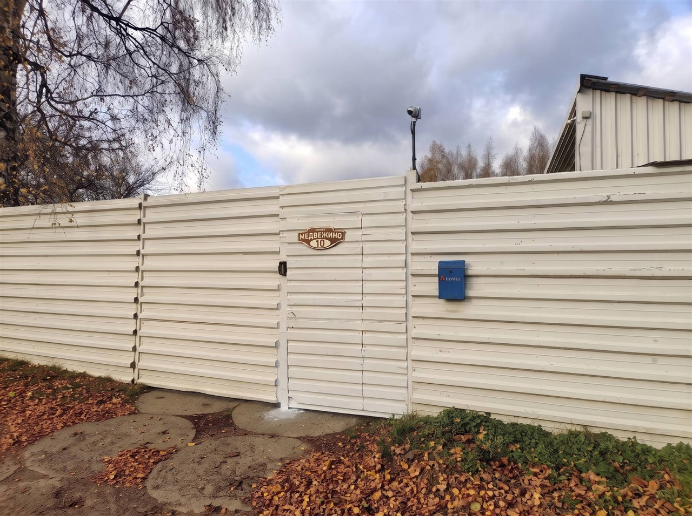
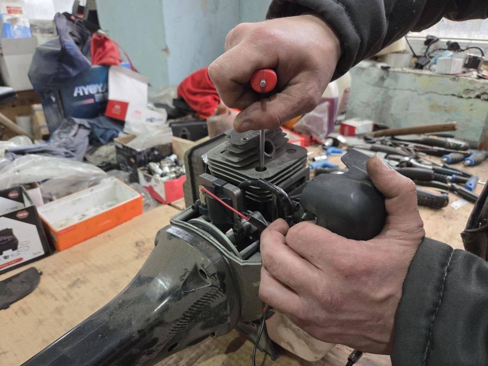
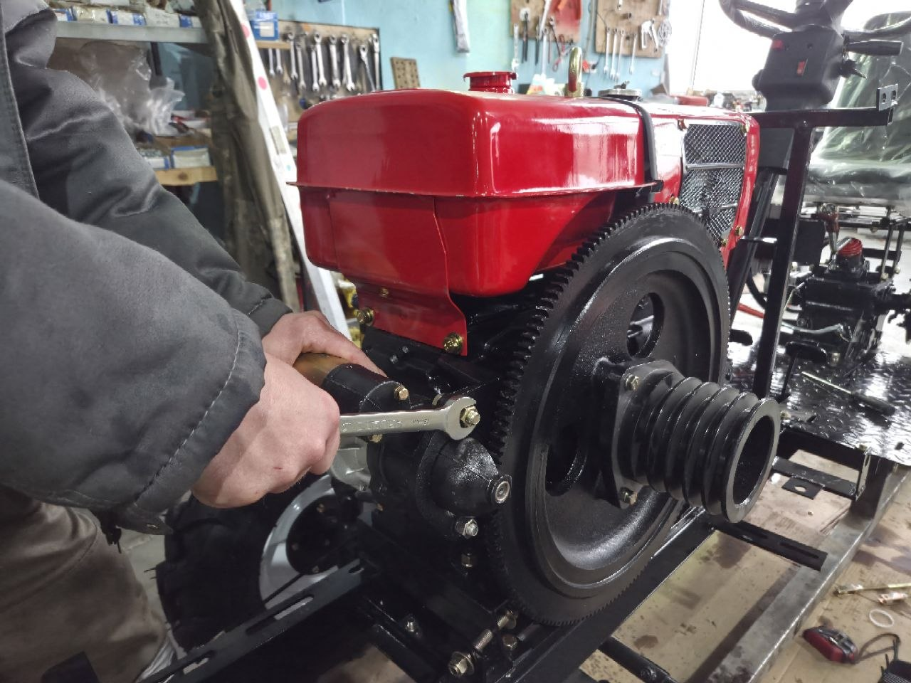
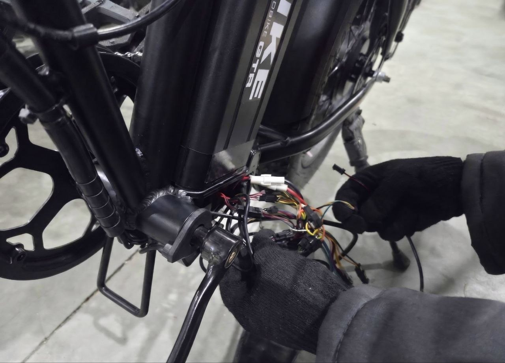
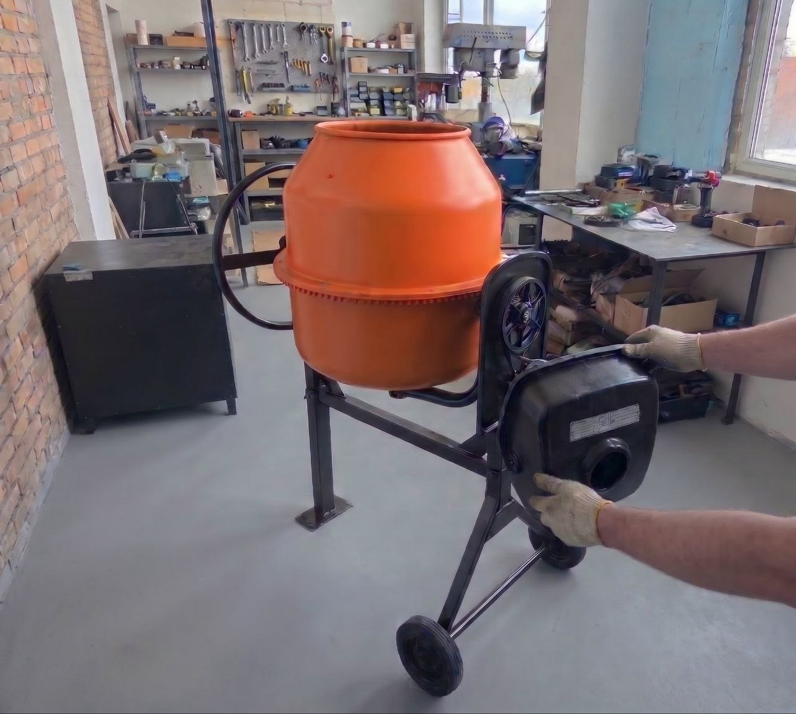
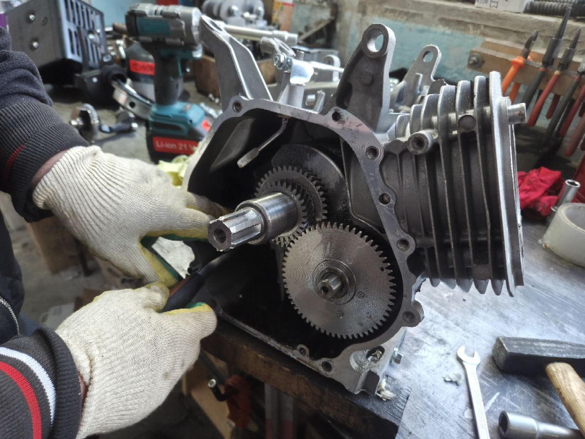

Shtenli и Profi Motors
Мы официальный сервис, поэтому запчасти по этим брендам либо лежат на складе, либо быстро приходят с завода. Привозить ничего с собой не нужно.
Работаем только на оригинальных запчастях.
Единственный официальный сервис брендов в Беларуси. Гарантийный и постгарантийный ремонт, плановое ТО.
Технику мы не продаём — только чиним и обслуживаем.
Бензиновые и дизельные, мотокультиваторы, минитракторы. Двигатель, коробка, сцепление, колёса и шины, фара, проводка.
Электроскутеры, электровелосипеды, трициклы, электросамокаты. Мотор-колесо, контроллер, аккумулятор, тормоза.
Карбюратор, стартер, редуктор, зажигание. Электрокосы тоже.
Запуск, цепь и шина, маслонасос, тормоз цепи.
Не заводится, нет напряжения, плавают обороты, не качает.
Двигатели для мотоблоков и культиваторов: ремонт, переборка, замена.
Не варит, выбивает, не набирает давление, травит воздух.
Мотор, редуктор, венец, дренажные насосы.
Перфораторы, болгарки, дрели, шуруповёрты, циркулярки, точила.
Мы официальный сервис, поэтому запчасти по этим брендам либо лежат на складе, либо быстро приходят с завода. Привозить ничего с собой не нужно.
Работаем только на оригинальных запчастях.
Сначала позвоните или напишите мастеру — он скажет, берёмся ли мы и что нужно.
Часто просим привезти запчасть с собой. Например, свечу зажигания проще и дешевле заказать на Wildberries или Ozon. Привезёте — поставим, и ремонт пройдёт без заминок.
Выберите свободное время и оставьте заявку.
Приём: пн–пт, 9:00–17:00, слоты по часу.
220018, г. Минск, ул. Медвежино, 10. В здании два входа — нам нужен левый, если стоять лицом к зданию. Дверь со звонком: позвоните, откроем.


Парковаться удобно — место перед воротами. Мастер поможет снять мотоблок с прицепа и закатить его в сервис.

Замена поршневой группы у бензокосы Shtenli Demon Black PRO S 2.5 кВт

Замена стартера в двигателе ZS1100NM у минитрактора Shtenli T240

Ремонт проводки у электровелосипеда Fatbike GTR 48V 15A

Замена двигателя у бетономешалки Shtenli PRO 130

Замена масла и ремонт картера двигателя
Срок ремонта зависит от характера поломки и наличия запчастей. Точный срок уточняйте в сервисе.
Только гарантийный талон, в котором записаны модель товара и дата покупки.
Да, лучше записаться: выберите свободное время в онлайн-записи или позвоните по номеру +375 29 685-56-00.
Да. Пришлите фото или видео поломки в Telegram или Viber на номер +375 29 685-56-00. Мастер подскажет возможную причину и ближайшую дату, когда сможем принять технику.
Да. Делаем гарантийный и постгарантийный ремонт, а также плановое техобслуживание техники Shtenli (Штенли) и Profi Motors.
Да, ремонтируем. Перед тем как привезти технику, позвоните или напишите мастеру: он скажет, есть ли у нас нужная запчасть. Если её нет, запчасть можно купить самостоятельно и привезти с собой — мы её поставим.
Отдельно запчасти не продаём. Для ремонта оригинальные запчасти Shtenli и Profi Motors есть на складе или быстро приходят с завода, привозить их с собой не нужно.
Минск, ул. Медвежино, 10, левый вход, дверь со звонком. Пн–Пт с 9:00 до 17:00, суббота и воскресенье — выходные.
220018, г. Минск, ул. Медвежино, 10
вход слева, дверь со звонком
Пн–Пт, 9:00–17:00
Сб, Вс — выходные